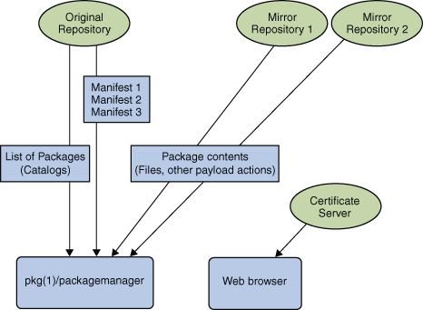

Setting Up a Mirror Repository
The following figure gives an overview of the IPS repository mirroring and the
IPS certificate servers.
Figure 8-1 IPS Repository and Mirrors

How to Set Up a Mirror
Before You Begin
Ensure that you are running the OpenSolaris 2009.06 operating system.
Read the section on the depot server, Overview of the pkg.depotd Depot Server and become familiar with the pkg.depotd(1M) command.
Ensure that you have sufficient bandwidth and disk space on the system that will mirror the master repository.
- Become root.
- Import the SMF service manifest.
# svccfg import /var/svc/manifest/application/pkg-server.xml
- Prepare a location for your mirror server, by briefly running a packaging depot
server in normal mode.
The depot server will create the appropriate directory structures. In this example, /export/pkg
is such a location.
# mkdir /export/pkg
# /usr/lib/pkg.depotd -d /export/pkg -p 8009
[wait for startup messages to conclude]
- Deploy a second instance of the packaging server to run as a
read-only mirror. Set pkg/port to a different value if you do not want your
mirror to run on port 80.
# svccfg -s pkg/server
svc:/application/pkg/server> add mirror
svc:/application/pkg/server> select mirror
svc:/application/pkg/server> addpg pkg application
svc:/application/pkg/server> addpg start method
svc:/application/pkg/server> setprop start/exec= astring: "/usr/lib/pkg.depotd
--mirror -p %{pkg/port} -d %{pkg/inst_root} -t %{pkg/socket_timeout} -s
% {pkg/threads} --proxy-base=%{pkg/proxy_base}
--log-access=%{pkg/log_access} --log-errors=%{pkg/log_errors}"
svc:/application/pkg/server> setprop pkg/inst_root = astring: "/export/pkg"
svc:/application/pkg/server> setprop pkg/threads = count: 50
svc:/application/pkg/server> setprop
exit
- Refresh the mirror.
# svcadm refresh pkg/server:mirror
- Enable the mirror.
# svcadm enable pkg/server:mirror
- For system performance, mount the file system that contains your repository with noatime
so that file accesses do not cause directory metadata updates. The following command
uses ZFS.
# zfs set atime=off filesystem_name
- Add a mirror to the configuration of the http://opensolaris.org repository on your
local packaging clients.
# pkg set-publisher -m http://my.hostname.sun.com opensolaris.org
How to Add a Mirror
Before You Begin
Ensure that you have set up a mirror. For instructions on setting
up a mirror, see How to Set Up a Mirror
Example 8-1 Add a Mirror
This example creates an image, adds a mirror within the image, and
installs a package.
$ pfexec pkg image-create -a os=http://ipkg.sun.com /tmp/io
$ cd /tmp/io
$ pfexec pkg set-publisher -m http://ipkg.mirror os
$ pfexec pkg install SUNWzsh
How to Remove a Mirror
Before You Begin
Ensure that you have set up a mirror and added the mirror
to the current publisher associated with your image. For instructions on setting up
a mirror, see How to Set Up a Mirror.